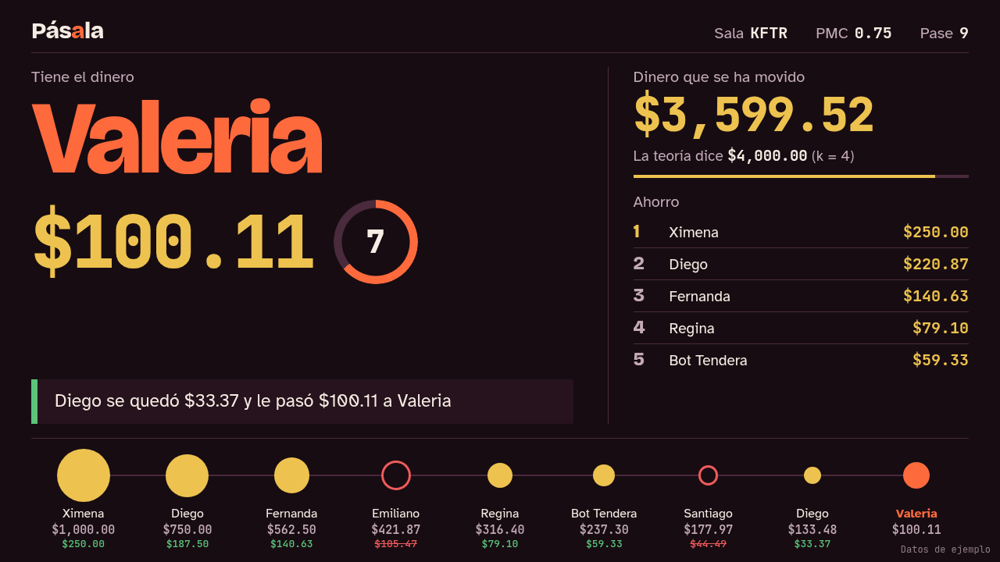
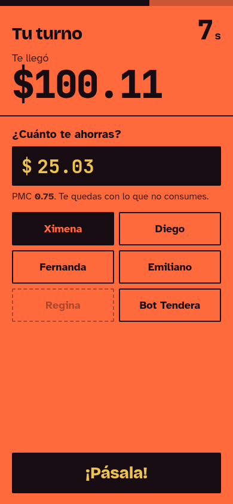

Diseño fijado el 19 de octubre. El proyector es el marcador con la cadena abajo; el celular es el Marcador. Estas pantallas usan datos de ejemplo y son la referencia de docs/DESIGN.md.


Proyector en vivoCelular en vivoPortada del juego